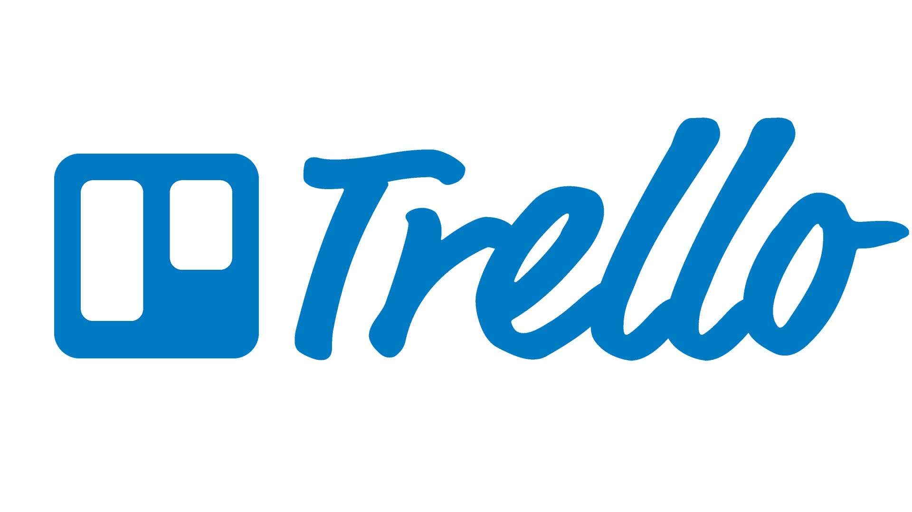
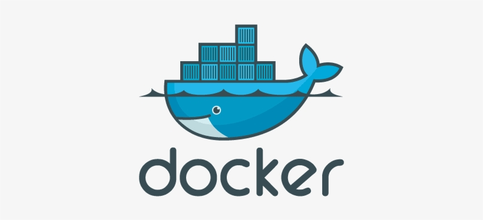
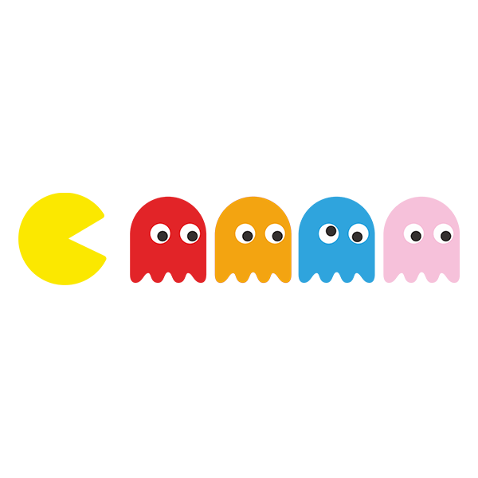
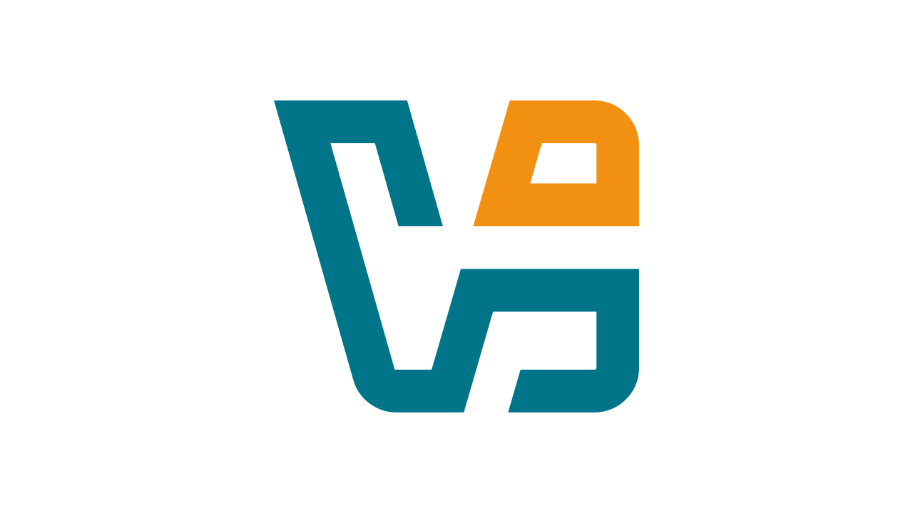

Mes projets

Internet Relay Chat
Client & serveur IRC temps réel.

Application de gestion
Tableau de bord interactif.

Containerisation Docker
Microservices & scripts Bash.

Pacman
Reprise du jeu en JavaScript.

Machines Virtuelles
Automation VirtualBox via Bash.